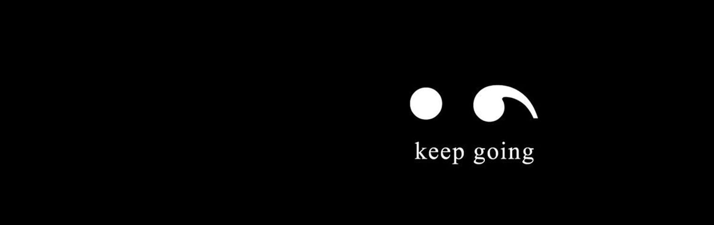

세미콜론
세미콜론
DASHBORD
모든 정보를 한 페이지에서 볼 수 있도록 만든 대시보드입니다. 상세한 내용은 각 대표 페이지에서 더 편하게 볼 수 있습니다.
◽자격증
일정 관리
▦ 표 보기
◽공모전
일정 관리
▦ 표 보기
◽CALENDER
일정 관리
일월화수목금토
◽IDEA
아이디어 관리
▦ 표 보기
| 아이디어 | 동의 | 작업 | 파일 | 회의록 | ||||||||
|---|---|---|---|---|---|---|---|---|---|---|---|---|
 김해민 김해민 | 확정됨 | 0 | ||||||||||
| 김해민 | 보관됨 | 공모전 | 2 |  강석현박수용 강석현박수용 | A팀 인천공항 공모전 1차 회의 | |||||||
| 김해민 | 확정됨 | 공모전 | 1 |  도형준 도형준 | 도형준 | [세션1] AI-PORT 대국민 아이디어 공모전(세미콜론lv1팀).pdf | B팀 인천공항 공모전 1차회의 | |||||
| 김해민 | 새 아이디어 | 1 | 도형준 | |||||||||
| 김해민 | 새 아이디어 | 1 | 도형준 | |||||||||
| 김해민 | 새 아이디어 | 0 | ||||||||||
| 김해민 | 확정됨 | 0 | ||||||||||
| 김해민 | 새 아이디어 | 0 | ||||||||||
| 김해민 | 새 아이디어 | 0 | ||||||||||
| 김해민 | 새 아이디어 | 0 | ||||||||||
| 김해민 | 새 아이디어 | 0 | ||||||||||
| 김해민 | 새 아이디어 | 0 |
계정 관리